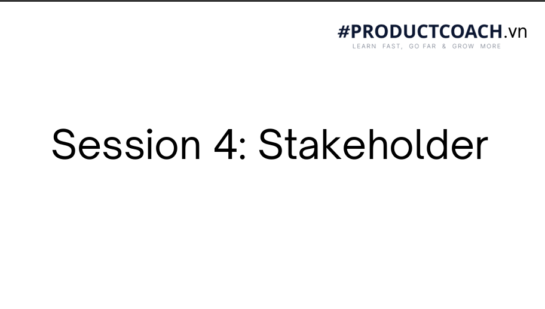

Chào cả lớp, hôm nay ở Session 4 chúng ta sẽ tập trung vào kỹ năng làm việc với Stakeholder — các bên liên quan. Một Product Manager giỏi không chỉ biết làm tính năng mà phải biết cách điều hòa kỳ vọng và gắn kết các bên lại với nhau.
Nhập Google Gemini API Key để kích hoạt luồng gọi LLM thật khi tổng hợp bài học. API Key sẽ được lưu an toàn trong trình duyệt của bạn (hoặc đọc từ file .env).